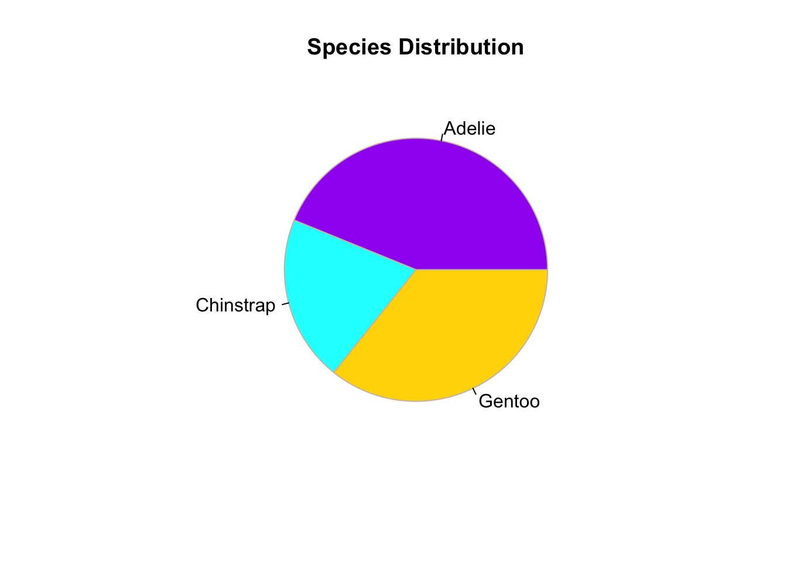

Section 2 Exploratory Data Analysis
Exploratory Data Analysis (EDA) is a crucial first step in analyzing data. It provides a summary of the main characteristics of datasets and helps identify patterns, outliers, and relationships.
libraries
2.1 Summary Statistics in R
One of the simplest ways to start analyzing data is to generate summary statistics.
## mpg cyl disp hp
## Min. :10.40 Min. :4.000 Min. : 71.1 Min. : 52.0
## 1st Qu.:15.43 1st Qu.:4.000 1st Qu.:120.8 1st Qu.: 96.5
## Median :19.20 Median :6.000 Median :196.3 Median :123.0
## Mean :20.09 Mean :6.188 Mean :230.7 Mean :146.7
## 3rd Qu.:22.80 3rd Qu.:8.000 3rd Qu.:326.0 3rd Qu.:180.0
## Max. :33.90 Max. :8.000 Max. :472.0 Max. :335.0
## drat wt qsec vs
## Min. :2.760 Min. :1.513 Min. :14.50 Min. :0.0000
## 1st Qu.:3.080 1st Qu.:2.581 1st Qu.:16.89 1st Qu.:0.0000
## Median :3.695 Median :3.325 Median :17.71 Median :0.0000
## Mean :3.597 Mean :3.217 Mean :17.85 Mean :0.4375
## 3rd Qu.:3.920 3rd Qu.:3.610 3rd Qu.:18.90 3rd Qu.:1.0000
## Max. :4.930 Max. :5.424 Max. :22.90 Max. :1.0000
## am gear carb
## Min. :0.0000 Min. :3.000 Min. :1.000
## 1st Qu.:0.0000 1st Qu.:3.000 1st Qu.:2.000
## Median :0.0000 Median :4.000 Median :2.000
## Mean :0.4062 Mean :3.688 Mean :2.812
## 3rd Qu.:1.0000 3rd Qu.:4.000 3rd Qu.:4.000
## Max. :1.0000 Max. :5.000 Max. :8.0002.2 Data Handling
2.2.1 Loading and Inspecting Data
EDA often begins by loading the dataset and inspecting its structure.
# Load CSV data
url <- "https://people.sc.fsu.edu/~jburkardt/data/csv/hw_200.csv"
data <- read.csv(url)
# View first rows of the data
head(data)## Index
## 1 2
## 2 3
## 3 4
## 4 5
## 5 6
## 6 7
## Height.Inches...Weight.Pounds..1..65.78..112.99.2..71.52..136.49.3..69.40..153.03.4..68.22..142.34.5..67.79..144.30.6..68.70..123.30.7..69.80..141.49.8..70.01..136.46.9..67.90..112.37.10..66.78..120.67.11..66.49..127.45.12..67.62..114.14.13..68.30..1 ...
## 1 71.52
## 2 69.40
## 3 68.22
## 4 67.79
## 5 68.70
## 6 69.80
## Weight.Pounds.
## 1 136.49
## 2 153.03
## 3 142.34
## 4 144.30
## 5 123.30
## 6 141.492.3 Data Manipulation
2.3.1 Subsetting Data
You can select specific columns or rows based on logical operations.
# Select rows where mpg is greater than
# 20
subset_mpg <- mtcars[mtcars$mpg > 20, ]
head(subset_mpg)## mpg cyl disp hp drat wt qsec vs am gear carb
## Mazda RX4 21.0 6 160.0 110 3.90 2.620 16.46 0 1 4 4
## Mazda RX4 Wag 21.0 6 160.0 110 3.90 2.875 17.02 0 1 4 4
## Datsun 710 22.8 4 108.0 93 3.85 2.320 18.61 1 1 4 1
## Hornet 4 Drive 21.4 6 258.0 110 3.08 3.215 19.44 1 0 3 1
## Merc 240D 24.4 4 146.7 62 3.69 3.190 20.00 1 0 4 2
## Merc 230 22.8 4 140.8 95 3.92 3.150 22.90 1 0 4 22.4 Visualization with Base R
Visualizations are essential for gaining insights quickly.
# Simple scatter plot
carsplot <- ggplot() + geom_point(data = mtcars,
aes(mpg, hp)) + theme_bw()
carsplot